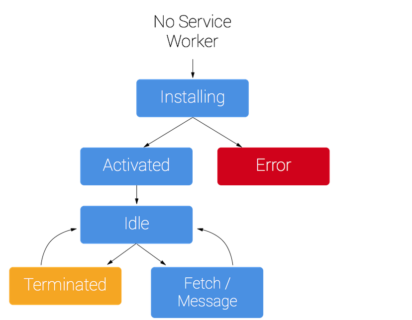
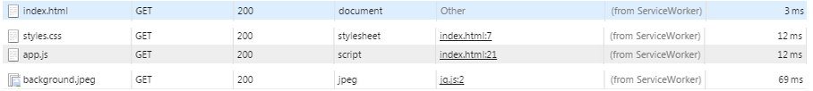

参考
Service Worker的身份
service的意思是服务，Worker的意思是工人，那么Service Worker的意思就是服务员。这个员工是2014年6月HTML5新招的实习生，目前在试用中。在此之前，已经有一位老员工，它叫Web Worker。那么问题来了，Boss是谁？Boss就是浏览器。准确来说，每个页面的javascript运行主线程都是一个Boss。 这里先谈一下大的背景。Boss很厉害，在页面上指点江山，呼风唤雨。但他有个局限：同一时刻只做一件事（单线程）。当一些很耗时的杂事让Boss去处理时，在处理的过程中他就无暇顾及其它重要的事了。在用户看来，页面没人管了，Boss不干事了！这时Boss就很郁闷。为了保证Boss能处理更重要的事情，董事会（W3C）终于招聘了一个新员工：Web worker。这下，Boss终于可以从耗时的杂事中解放出来了，他只需要把Web worker叫过来说：“这些事情拿去做，没做完不要来找我”。Web worker领到任务后默默地到自己的工位（线程）去干活，完成之后给Boss发了个邮件（postMessage）。Boss收到邮件（onmessage）后欣慰地点了点头。 扯了半天好像还没谈到新员工啊。。。不急，下面就讲到了。 Boss下班了（页面关闭）,Web worker也收拾东西回家了。这样执行了很久，直至2014年6月，董事会发现一个问题：“居然没有人在老板下班后加班？”。于是，又招了一个专职加班的：Service Worker。它被赋予的绩效目标如下：
1.入职（install）后永不下班，而能更新。
2.能处理Boss需要的资源（HTTPS请求），以便离线时也能让BOSS取到数据（从cache中）
3.能向客户推送消息(push notifications)
4.不允许越权管理Boss的事（DOM ACCESS）
总地来说，Service worker是独立于页面的一个运行环境，它在页面关闭后仍可以运行。同时，也能对它负责的页面的网络请求进行截取和返回请求（类似于Fiddler）。
使用条件
求协议条件 HTTPS。 毕竟给Service Worker的权利较大，可以直接截取和返回用户的请求，所以了于安全考虑，目前只能在HTTPS环境下才能使用Service Worker
页面文件代码
if (navigator.serviceWorker) {
// 注册Service Worker scope表示作用的页面的path
// register函数返回Promise
navigator.serviceWorker.register('./service-worker.js', {scope: './'})
.then(function (registration) {
console.log(registration);
})
.catch(function (e) {
console.error(e);
})
} else {
console.log('Service Worker is not supported in this browser.')
}
Service Worker文件：service-worker.js
importScripts('js/cache-polyfill.js'); // cache 扩展
var CACHE_VERSION = 'app-v1'; // 缓存文件的版本
var CACHE_FILES = [ // 需要缓存的页面文件
'/',
'images/background.jpeg',
'js/app.js',
'css/styles.css'
];
self.addEventListener('install', function (event) { // 监听worker的install事件
event.waitUntil( // 延迟install事件直到缓存初始化完成
caches.open(CACHE_VERSION)
.then(function (cache) {
console.log('Opened cache');
return cache.addAll(CACHE_FILES);
})
);
});
self.addEventListener('activate', function (event) { // 监听worker的activate事件
event.waitUntil( // 延迟activate事件直到
caches.keys().then(function(keys){
return Promise.all(keys.map(function(key, i){ // 清除旧版本缓存
if(key !== CACHE_VERSION){
return caches.delete(keys[i]);
}
}))
})
)
});
self.addEventListener('fetch', function (event) { // 截取页面的资源请求
event.respondWith( // 返回页面的资源请求
caches.match(event.request).then(function(res){ // 判断缓存是否命中
if(res){ // 返回缓存中的资源
return res;
}
requestBackend(event); // 执行请求备份操作
})
)
});
function requestBackend(event){ // 请求备份操作
var url = event.request.clone();
return fetch(url).then(function(res){ // 请求线上资源
//if not a valid response send the error
if(!res || res.status !== 200 || res.type !== 'basic'){
return res;
}
var response = res.clone();
caches.open(CACHE_VERSION).then(function(cache){ // 缓存从线上获取的资源
cache.put(event.request, response);
});
return res;
})
}
Service Worker生命周期

Service Worder在安装（install）和激活(activate)后，会进入正常工作状态。当它负责的页面在浏览器中被打开，它就会对页面的请求进行处理。在其它情况下（除了特殊情况:service worker会定时更新），Service worker处理暂停状态，不会占用内存和CPU资源。

上图为在第一次打开页面后，关闭网络，再次打开的页面请求。页面在离线情况下仍然能打开，并且能获取到相应的样式和脚本资源。从图中可以看出，资源的获取途径是“from ServiceWorker”，说明确实是serviceWorker在起作用了